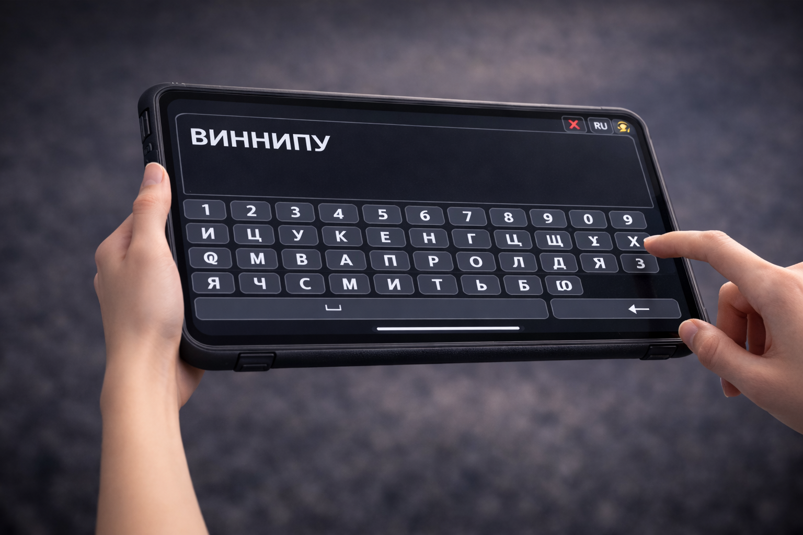
Палец набирает «ВИННИПУХ». Смена руки. Телесность.
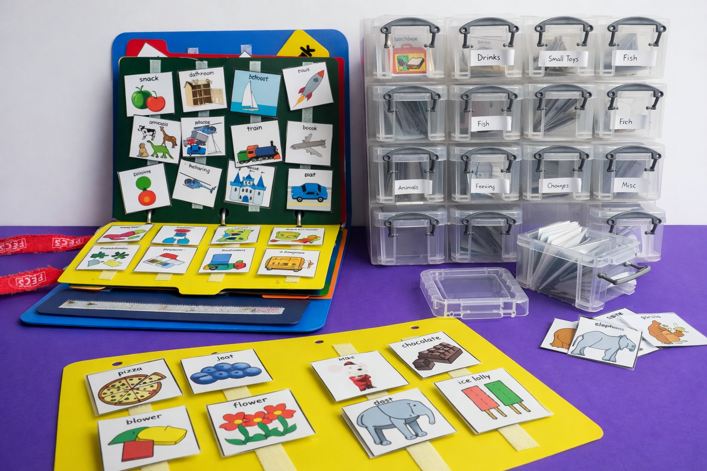
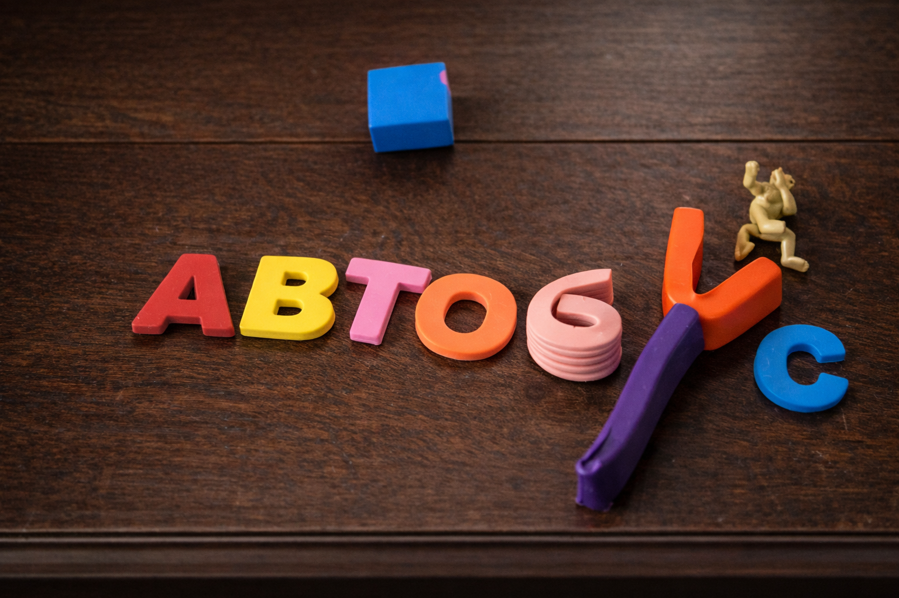
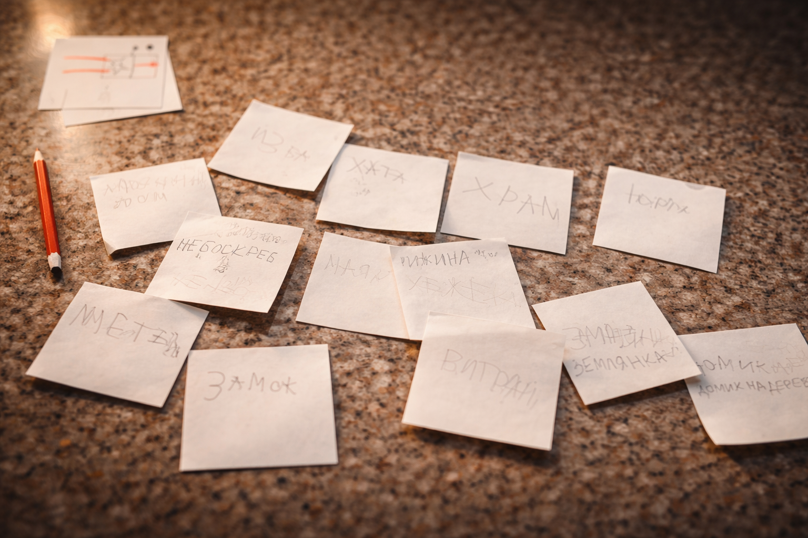
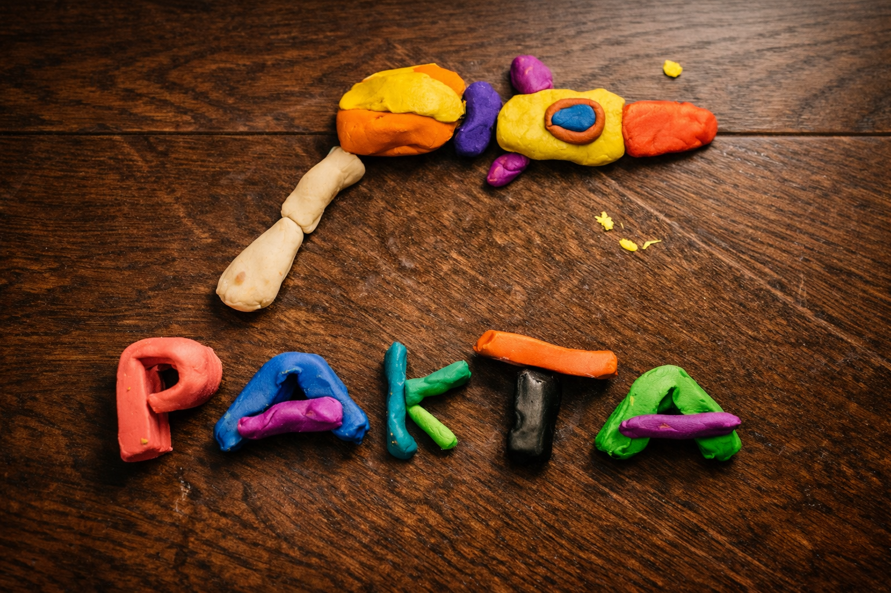
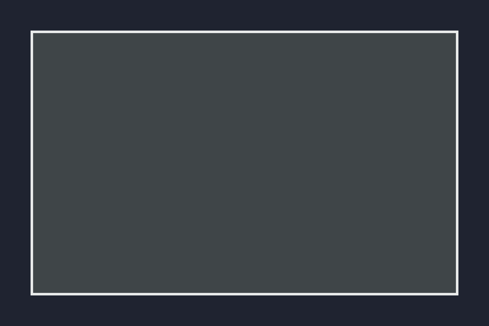
Мы начали с проектирования. Изучения. Чертежа.
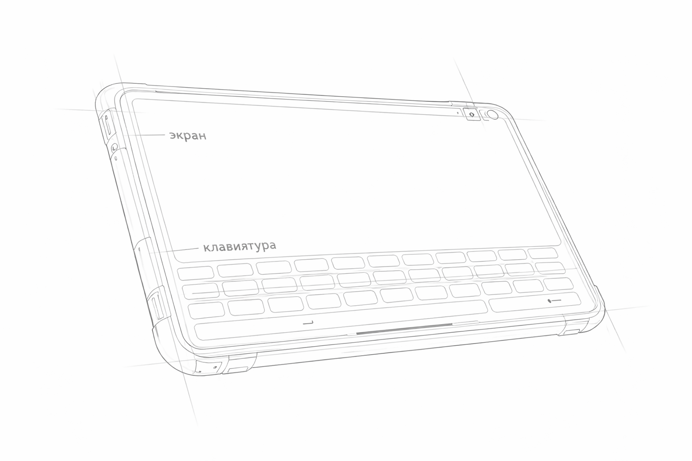
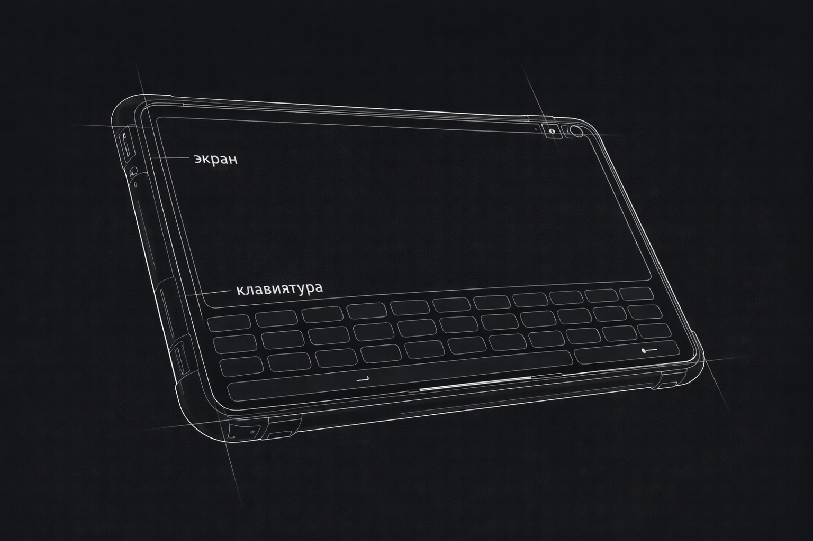
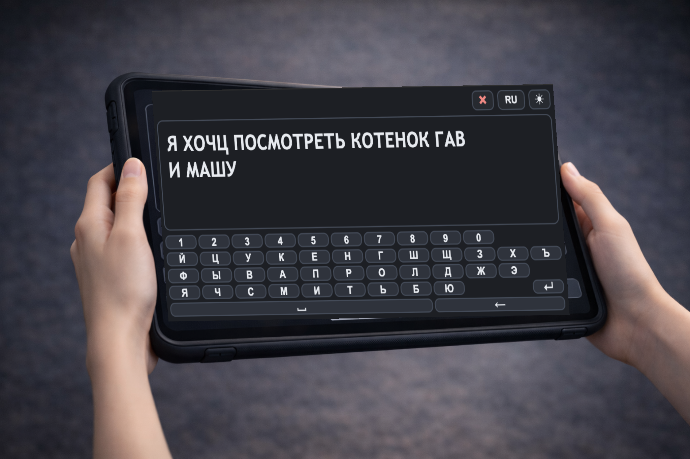

Палец набирает «ВИННИПУХ». Смена руки. Телесность.
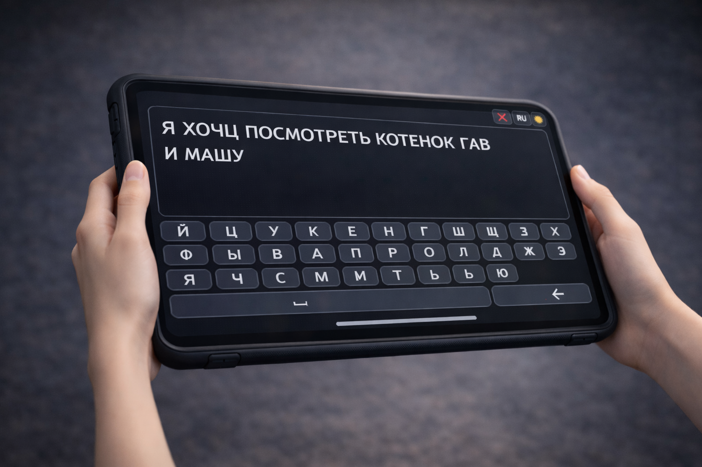
Устройство наклоняется. Вид сбоку. Экран скрыт.
Текст разворачивается. Взрослый: «Хорошо, посмотри.»
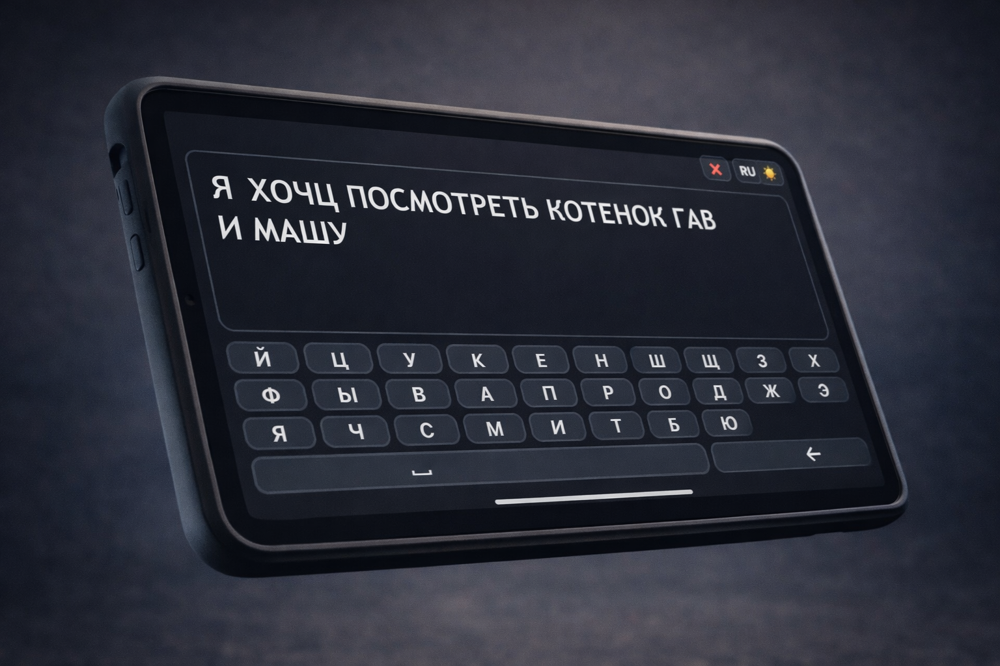
Текст возвращается. Курсор готов к вводу.
Написал → Показал → Получил реакцию → Продолжил.
PLANKA — среда, в которой его мысль становится видимой.